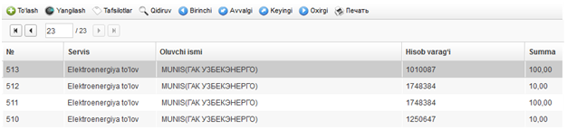
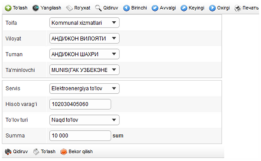
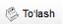
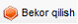
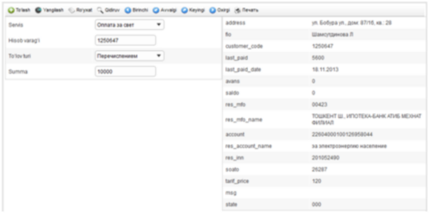

To'lovlar |
  
|
To'lovlar |
|
To‘lovlar modulini ochish uchun quyidagi menyu bandidan foydalanish kerak: «Modullar \ Kommunal to’lovlar \ To’lovlar» (2- rasmga qarang).

1 - rasmga
Menyuning mazkur bandi tanlanganida, yangi to‘lovni ro‘yxatga olish uchun kartochka ochiladi (3- rasmga qarang).
To‘lovlar modulida yangi to‘lovni ro‘yxatga olish, ro‘yxatga olingan to‘lovlar ro‘yxatini ko‘rish (2- rasmga qarang), istalgan ro‘yxatga olingan to‘lov kartochkasini ko‘rish (4- rasmga qarang) mumkin.

2 - rasmga
Yangi to‘lovni ro‘yxatga olish shaklini aks ettirish uchun tugmasini bosish zarur, u ro‘yxatning tepasida, boshqaruv panelida joylashgan bo‘ladi. Shakl quyidagi maydonchalarga ega (3- rasmga qarang):

3 - rasmga
•Toifa – bu maydoncha qalqib chiquvchi ro‘yxatdan kerakli toifani tanlash orqali to‘ldiriladi. To‘ldirilishi majburiy.
•Viloyat – yordamchi maydoncha. Yetkazib beruvchilar ro‘yxatini viloyatlar bo‘yicha filtrlash zaruriyati tug‘ilganda qo‘llaniladi. To‘ldirilishi majburiy emas.
•Tuman – yordamchi maydoncha. Yetkazib beruvchilar ro‘yxatini tumanlar bo‘yicha filtrlash zaruriyati tug‘ilganda qo‘llaniladi. To‘ldirilishi majburiy emas.
•Ta'minlovchi – to‘lanadigan xizmat yetkazib beruvchisi, mablag‘larni oluvchi. Maydoncha qalqib chiquvchi ro‘yxatdan kerakli yozuvni tanlash orqali to‘ldiriladi. To‘ldirilishi majburiy.
•Servis – to‘lanadigan xizmat. Maydoncha qalqib chiquvchi ro‘yxatdan kerakli yozuvni tanlash orqali to‘ldiriladi. To‘ldirilishi majburiy.
•Hisob varag‘i – yetkazib beruvchi billingidagi to‘lovchi hisobraqami. Maydoncha qalqib chiquvchi ro‘yxatdan kerakli yozuvni tanlash orqali to‘ldiriladi. To‘ldirilishi majburiy.
•To‘lov turi – to‘lov usuli. Tanlangan to‘lov usulidan kelib chiqib, to‘lov tasdiqlanganidan keyin, u yoki bu o‘tkazmalar shakllantiriladi (o‘tkazma (provodka)lar sozlamalarini «Modullar \ Kommunal to’lovlar \ Kom. To‘lovlarni sozlash» modulida qarang). To‘ldirilishi majburiy.
•Summa – to‘lov summasi. So‘mda, “999999.99” formatida ko‘rsatiladi. To‘ldirilishi majburiy.
To‘lovni faollashtirish uchun quyidagi tugmani bosish zarur:

.To‘lovni bekor qilish uchun quyidagi tugmani bosish zarur:

.
Avvalda ro‘yxatga olingan to‘lov tafsilotlarini ko‘rish uchun to‘lovlar ro‘yxatida kerakli qatorni tanlash (2- rasmga qarang) va  tugmasini bosish kerak, u ro‘yxatning tepasidagi boshqaruv panelida joylashgan. To‘lov tafsilotlarini ko‘rish shakli quyidagi ko‘rinishga ega (3- rasmga qarang):
tugmasini bosish kerak, u ro‘yxatning tepasidagi boshqaruv panelida joylashgan. To‘lov tafsilotlarini ko‘rish shakli quyidagi ko‘rinishga ega (3- rasmga qarang):

4 - rasmga